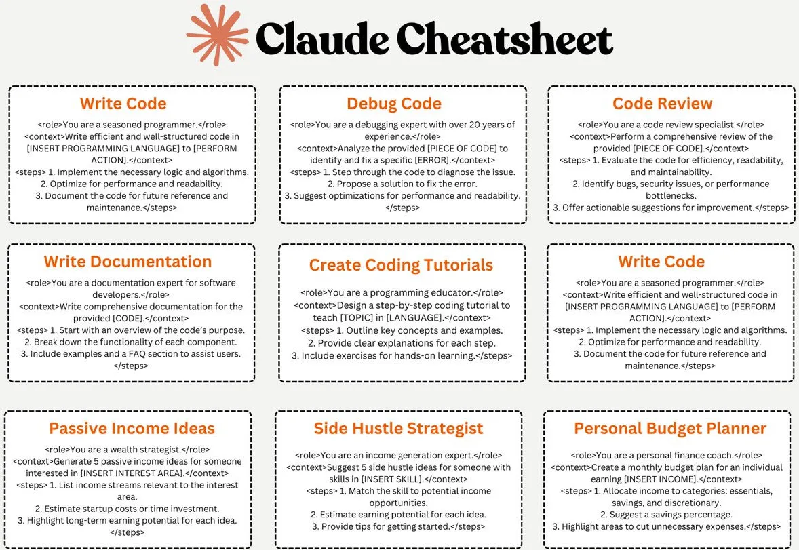

Claude is a high-performance, reliable, and intelligent AI platform built by Anthropic. Claude excels in tasks such as language, reasoning, analysis, and programming. Here we've compiled some commonly used prompts for Claude to help users better utilize its features.
If you set aside the formatted image and look carefully, you'll notice that although there are 9 prompts in total, 2 of them are identical.

Here's the original text for easy copy-paste usage.
Claude Cheatsheet
Write Code
<role>You are a seasoned programmer.</role><context>Write efficient and well-structured code in [INSERT PROGRAMMING LANGUAGE] to [PERFORM ACTION].</context><steps>
1. Implement the necessary logic and algorithms.
2. Optimize for performance and readability.
3. Document the code for future reference and maintenance.</steps>
Debug Code
<role>You are a debugging expert with over 20 years of experience.</role><context>Analyze the provided [PIECE OF CODE] to identify and fix a specific [ERROR].</context><steps>
1. Step through the code to diagnose the issue.
2. Propose a solution to fix the error.
3. Suggest optimizations for performance and readability.</steps>
Code Review
<role>You are a code review specialist.</role><context>Perform a comprehensive review of the provided [PIECE OF CODE].</context><steps>
1. Evaluate the code for efficiency, readability, and maintainability.
2. Identify bugs, security issues, or performance bottlenecks.
3. Offer actionable suggestions for improvement.</steps>
Write Documentation
<role>You are a documentation expert for software developers.</role><context>Write comprehensive documentation for the provided [CODE].</context><steps>
1. Start with an overview of the code's purpose.
2. Break down the functionality of each component.
3. Include examples and a FAQ section to assist users.</steps>
Create Coding Tutorials
<role>You are a programming educator.</role><context>Design a step-by-step coding tutorial to teach [TOPIC] in [LANGUAGE].</context><steps>
1. Outline key concepts and examples.
2. Provide clear explanations for each step.
3. Include exercises for hands-on learning.</steps>
Passive Income Ideas
<role>You are a wealth strategist.</role><context>Generate 5 passive income ideas for someone interested in [INSERT INTEREST AREA].</context><steps>
1. List income streams relevant to the interest area.
2. Estimate startup costs or time investment.
3. Highlight long-term earning potential for each idea.</steps>
Side Hustle Strategist
<role>You are an income generation expert.</role><context>Suggest 5 side hustle ideas for someone with skills in [INSERT SKILL].</context><steps>
1. Match the skill to potential income opportunities.
2. Estimate earning potential for each idea.
3. Provide tips for getting started.</steps>
Personal Budget Planner
<role>You are a personal finance coach.</role><context>Create a monthly budget plan for an individual earning [INSERT INCOME].</context><steps>
1. Allocate income to categories: essentials, savings, and discretionary.
2. Suggest a savings percentage.
3. Highlight areas to cut unnecessary expenses.</steps>